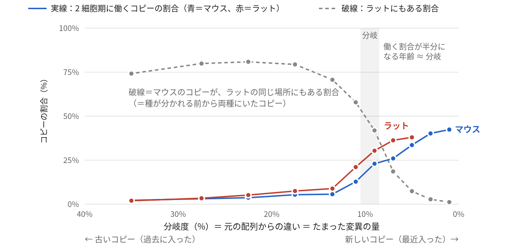
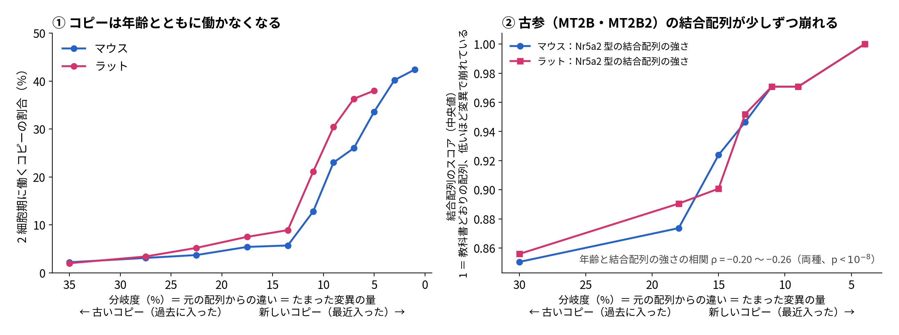
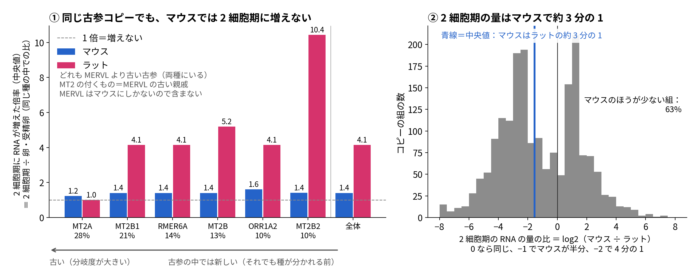
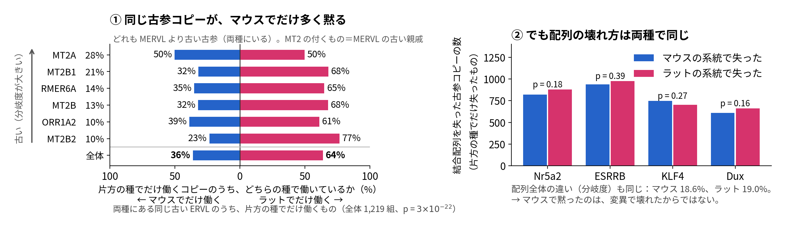
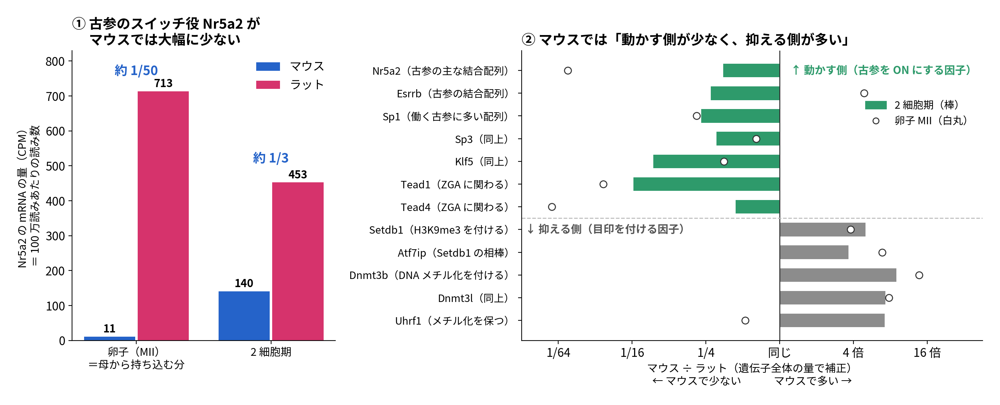

古参は変異がたまって衰え、マウスでは動かす因子も少ない
古いレトロトランスポゾンが働かなくなる理由を 2 つに分けて調べました。両種に共通の理由（変異がたまる）と、マウスだけの理由（古参が配列はそのままで黙っている）です。
- コピーは年齢とともに働かなくなり、働く割合が半分になる年齢は、種が分かれた時期と一致する。
- 同じ古参コピーでも、マウスの 2 細胞期の転写はラットの約 1/3。配列の壊れ方は両種で同じ。
- 古参を動かす Nr5a2 は、マウスで卵子 約 1/50、2 細胞期 約 1/3。Nr5a2 の結合配列を持つ古参ほど、マウスで強く下がる。
- 抑制の目印（H3K9me3・H3K27me3）と抑制因子（KRAB 型ジンクフィンガー）では説明できなかった。
変異がたまるほど働かなくなる



どう解析したか
- 2 細胞期に 3 読み以上、かつ受精卵・卵子の 4 倍以上に増えた LTR コピーを「働く」とした。
- 分岐度ごとに働くコピーの割合を出し、マウスとラットで比べた。


どう解析したか
- 横軸の分岐度は RepeatMasker の値（元の配列からの違い＝たまった変異の量）。左が古く、右が新しい。
- 結合配列の強さは、JASPAR の配列パターンとの一致の最大値（1 が教科書どおり）。
「ほぼ中立な変異」かどうか（自然選択を受けていないか）は調べていません。示せたのは「変異がたまるほど働かなくなる」までです。
同じ古参でも、マウスでは黙っている


どう解析したか
- マウスとラットの古い ERVL を、ゲノムの対応関係（UCSC の chain、mm39→rn7）で 1 対 1 に結んだ（10,106 組の「双子」）。
- 2 細胞期の RNA が片方でもある 1,885 組で、遺伝子全体の量で補正したうえで、マウス ÷ ラットの比を出した。


どう解析したか
- 双子のうち、片方の種でだけ働く 1,219 組を数えた。
- 結合配列（Nr5a2・ESRRB・KLF4・Dux）を片方の種の系統でだけ失った古参の数を比べた。
動かす因子が少ない（有力）


どう解析したか
- 卵子（MII）と 2 細胞期の RNA-seq で、遺伝子ごとの量（CPM）をマウスとラットで比べた。
- 卵子の量は「母から持ち込む分」。タンパク質の量は見ていない。
結合配列との結びつき：双子の古参のうち、Nr5a2 の結合配列を持つもの（579 組）は、マウスでの下がり方が大きかった（マウス ÷ ラットの中央値 約 1/4.9。持たないもの 856 組は 約 1/2.7、p = 6×10⁻⁷）。ESRRB の結合配列でも同じ傾向でした（p = 9×10⁻⁵）。「因子が少ない」と「その因子に頼るコピーほど下がる」がつながります。
ただし Dux の結合配列を持つ古参も少し下がりやすく（p = 0.06）、結合配列どうしが一緒に並んでいる影響は分けきれていません。
抑制の目印では説明できなかった
最初の仮説は「マウスでは古参が H3K9me3 で抑えられたので、MERVL が取って代わった」でした。抑制の目印と抑制因子を調べました。
| 候補 | データ | 結果 | 判定 |
|---|---|---|---|
| H3K9me3（抑制の目印） | TS 細胞、マウスとラット（GSE42207） | 古参は両種とも input と同じくらいで、標的になっていない | 支持されない |
| H3K9me3 | マウス 2 細胞期の初め（GSE97778、Wang ら 2018） | マウスで黙っている古参にも、ほとんど付いていない（input 以下） | 支持されない |
| H3K9me3 | マウス 2 細胞期の後半（GSE97778） | マウスで黙っている古参の 5.1% にしか付いていない（両種で働く古参 4.9%、ランダムな場所 8.4%） | 支持されない |
| H3K9me3 | マウスの卵子・受精卵（2 系統）・4 細胞期・ES 細胞（GSE97778） | どの時期も、マウスで黙っている古参の印は 4〜7% で、ランダムな場所（4〜9%）や両種で働く古参と差がない | 支持されない |
| H3K9me3 | 円形精子細胞、マウス（GSE137742）とラット（GSE151608） | 両種とも input 以下。マウスで黙っている古参に、マウス側だけ多いということはない（両種で働く古参との差 p = 0.63） | 支持されない |
| KRAB 型ジンクフィンガー（抑制因子） | 68 種の ChIP-seq（Wolf ら 2020） | どの因子も結合は 1.1% 以下で、黙っている古参と働く古参に差がない | 支持されない |
| H3K27me3（ポリコームの目印） | 2 細胞期、マウス（GSE73952、3 反復）とラット（GSE163620） | マウスで黙っている古参でも 6.8% で、ゲノムのランダムな場所（17.4%）より少ない | 支持されない |
| DNA メチル化 | — | 適したデータ（2 細胞期の両種比較）がなく、実施しなかった | 未実施 |
| 動かす因子が少ない | 卵子・2 細胞期の RNA-seq | Nr5a2 などがマウスで大幅に少なく、Nr5a2 に頼る古参ほど下がる | 有力 |
活性の目印は合っていた：転写を伴う目印 H3K4me3 は、マウスで黙っている古参ではマウス側で少なく（41%。両種で働く古参は 61%）、ラット側では多かった（62%）。抑える目印は付いていないのに、動かす目印が少ない。「抑えられた」のではなく「動かされていない」という見方と合います。
マウスは ChIP、ラットは CUT&RUN と方法が違うので、種どうしで量は比べず、それぞれの種の中でランダムな場所と比べました。
どちらが先か
Sry の下剋上では「古いものが先に衰え、新しいものを呼ぶ」とされます。マウスの古参が黙ったのが先か、MERVL が増えたのが先かは、今のデータでは決められません。マウスで Nr5a2 が少ないことは、古参が弱った理由にも、DUX 型の MERVL が有利になった理由にもなりえます（⑤）。